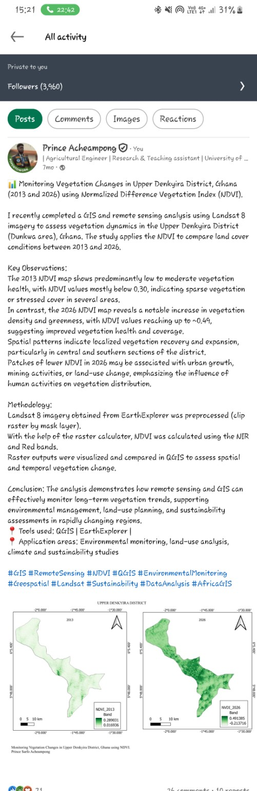
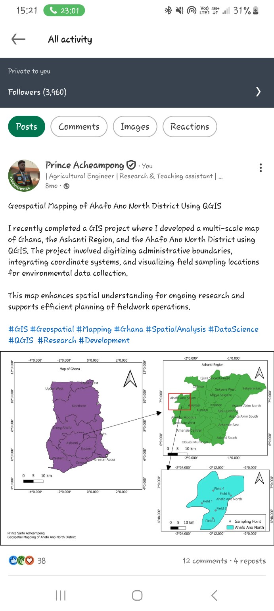
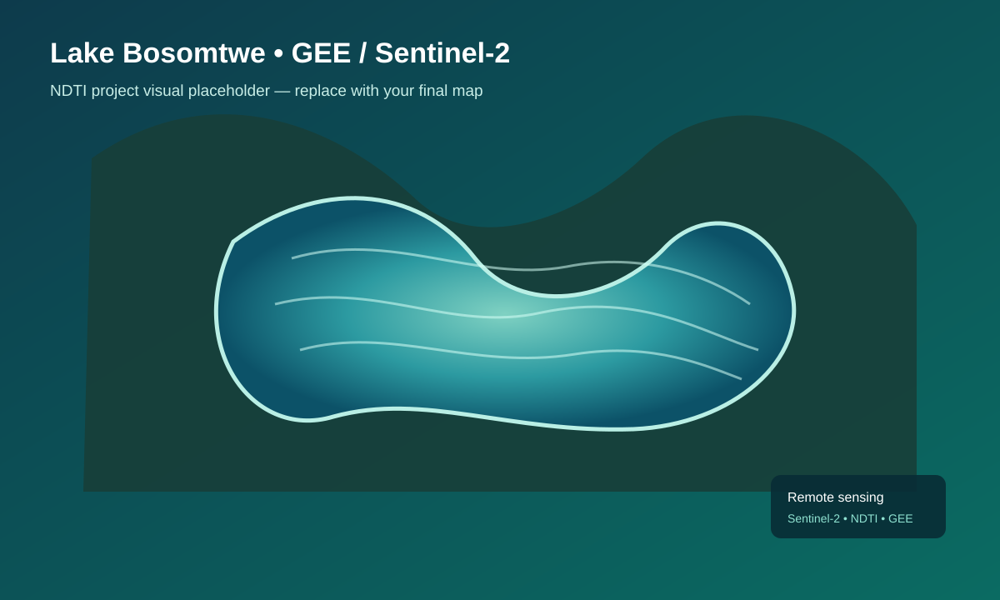
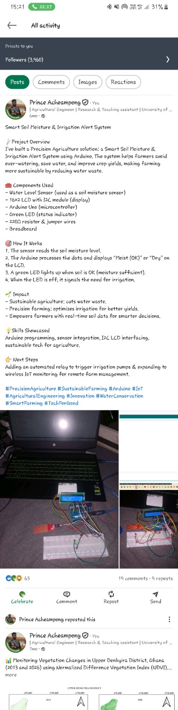

Remote Sensing
Satellite image processing, NDVI/NDTI, image classification and environmental monitoring.
I turn satellite imagery, spatial data and engineering knowledge into practical insights for agriculture, water resources and environmental monitoring.
01 / ABOUT
I am an Agricultural Engineering graduate and Teaching & Research Assistant at the University of Ghana, with a growing specialization in precision agriculture, remote sensing, GIS and environmental data analysis.
My work sits at the intersection of field-based engineering and geospatial technology: processing satellite imagery, building spatial datasets, analysing vegetation and water-quality indicators, and prototyping technology for smarter agricultural decisions.
02 / CAPABILITIES
From raw imagery to interpretable maps, models and engineering decisions.
Satellite image processing, NDVI/NDTI, image classification and environmental monitoring.
Spatial datasets, raster analysis, administrative mapping, sampling locations and visualization.
Data cleaning, exploratory analysis and scientific visualization for environmental datasets.
CAD, experimental research and embedded systems applied to sustainable agriculture.
03 / SELECTED PROJECTS

Compared Landsat 8 imagery from 2013 and 2026 to identify changes in vegetation health and spatial coverage.

Built a multi-scale Ghana-to-district map, integrating administrative boundaries and field sampling locations.

Used Sentinel-2 imagery and NDTI in Google Earth Engine to investigate spatial patterns in water clarity and sediment.

Developed an Arduino prototype that reads soil moisture and provides real-time visual irrigation alerts.
04 / MAPS SHOWCASE
A dedicated space for interactive maps, satellite scenes and before/after comparisons.
05 / EXPERIENCE
University of Ghana • Legon
Science and Development Journal • University of Ghana
Research on hydraulic retention time and cleaning mechanisms of coconut biochar filtration systems for wastewater treatment.
1st Annual Engineering Conference • ISSER Conference Center
Presented research on the hydraulic retention time and cleaning mechanism of a coconut biochar filtration system.
Science and Development Journal • Volume 10, No. 2 (2026)
Read publication ↗06 / CONTACT
I am open to research collaborations, graduate opportunities, geospatial projects and engineering work.